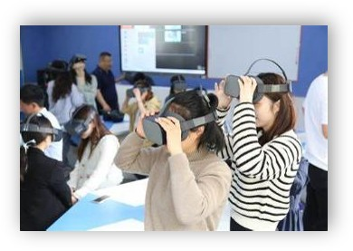
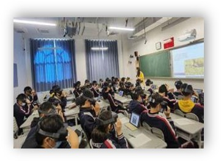
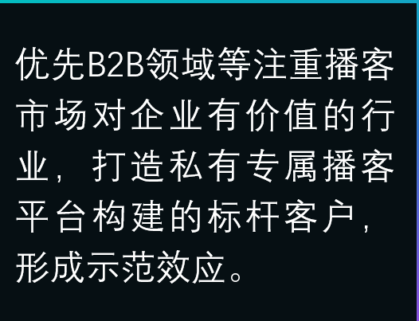
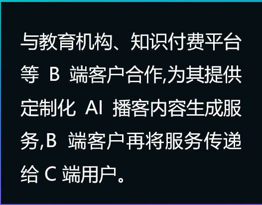
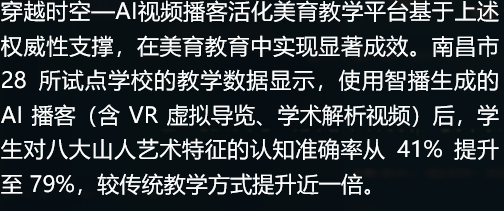
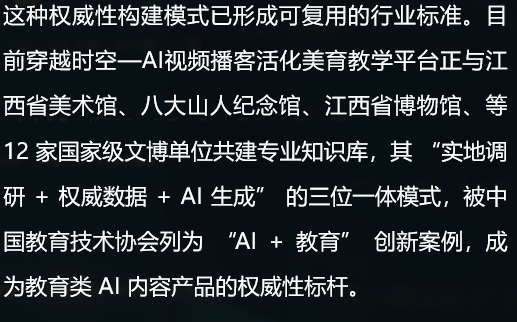

解决产业痛点
通过AI技术降低内容制作门槛，解决传统音视频制作成本高、周期长的问题，为教育行业提供高效内容生成方案，打破资源壁垒。


解决需求对接
采用B2B+B2C双模式，为教育机构提供定制内容服务，同时面向C端用户建立专属播客平台，实现内容创作与分发的完整闭环。


解决需求匹配
结合用户画像数据与AR/VR技术资源，实现内容个性化推荐与场景适配，提升播客内容的实用性与精准覆盖范围。


提升价值维度
从教学效率、文化传承、知识传播、内容创新等多维度提升社会与商业价值，实现AI播客平台对教育行业的全方位赋能。